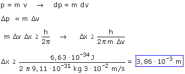

b)
La imprecisión en la velocidad es el 0.01% de su valor es decir: 3·10-2 m/s
Relación de Heisemberg:

Una imprecisión en la velocidad implica una imprecisión en el momento lineal. La relación entre las imprecisiones Δp, Δv es la misma que hay entre dp, dv, entonces resulta:

Esta imprecisión en la posición del electrón es grandísima: en la práctica ni se sabe donde anda